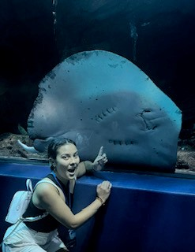

On my website I will talk about different marine animals and fun facts about them!
I like marine animals (mostly sharks) because of my sister. She recently went to college and loved sea animals like sharks and whales. I also have gone to many aquariums with her and thought it would be cool if I could just be able to tell my family about what species sharks we see there are. I then started looking up what different species were and their attributes.
